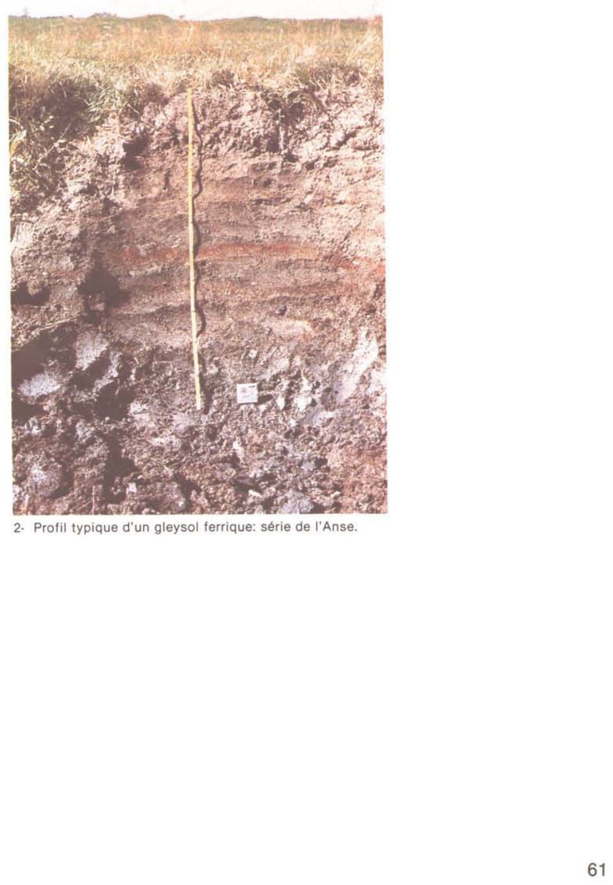
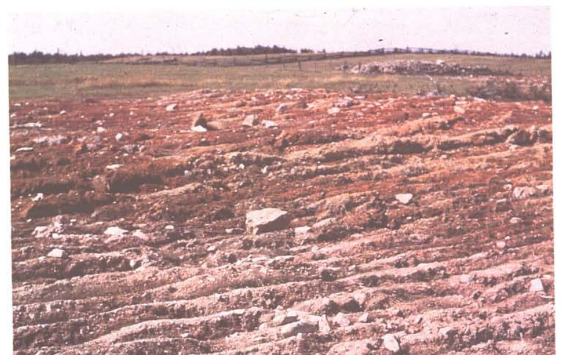

Identification & Caractéristiques Générales
La série De l'Anse dérive de sédiments argileux et d'argiles limoneuses riches en sulfures, mis en place dans le liseré discontinu de la basse plaine estuarienne et marine récente du fleuve Saint-Laurent, à des altitudes comprises entre 3,6 et 15,2 mètres. Ces matériaux proviennent de l'accumulation de sédiments fins dans des anses abritées, des vasières et des étangs de barrage lors de phases de colmatage par des eaux saumâtres, caractérisées par la présence de restes de plantes halophiles semi-décomposées. Sur le plan géomorphologique, ces sols occupent des positions de plaines unies à horizontales, caractérisées par des pentes très faibles variant de 0,5 à 2 p. cent.
Morphologiquement, le profil se compose de sédiments exempts de pierres tant en surface qu'à l'intérieur de la coupe pédologique, caractérisés par une texture lourde où la fraction limoneuse atteint des proportions de 40 à 55 p. cent, combinée à une forte proportion d'argile et à une coloration de base grise à gris-bleu, souvent marquée par des teintes ocres attribuées à la matière organique. En raison de cette texture fine et de la position topographique basse, la perméabilité est lente et le drainage naturel est mauvais. La nappe phréatique affleure fréquemment en surface ou à faible profondeur durant les périodes de fonte nivale et de fortes précipitations printanières et automnales. Le profil présente également une coloration brune superficielle liée à la présence de matières organiques.
Sur le plan agronomique, les contraintes majeures de la série De l'Anse résident dans l'excès d'eau chronique, la compacité des matériaux et la présence potentielle de sulfures exigeant une gestion rigoureuse du pH et du drainage. L'installation d'un réseau de drainage souterrain intensif est un prérequis indispensable pour abaisser la nappe phréatique, améliorer la portance et permettre la mise en valeur de ces terres pour des grandes cultures ou des cultures fourragères productives. En l'absence d'aménagements hydriques et de travaux de régie adéquats, la productivité demeure restreinte, cantonnant souvent ces superficies à des prairies de faible rendement dominées par l'agrostide ou à des friches. Un travail du sol minutieux et un chaulage calculé selon les exigences de pH sont également requis pour prévenir l'acidification liée à l'oxydation des sulfures et optimiser la structure de l'horizon arable.
Classification Taxonomique & Environnement Pédologique
| Ordre Pédologique | Gleysolique |
|---|---|
| Grand Groupe (SCSS) | Gleysol humique |
| Sous-Groupe Taxonomique | Gleysol humique régosolique |
| Famille Pédologique | Argileuse-fine, mixte argileux, acide |
| Mode de Dépôt Parental | Alluvion récente |
| Classe de Drainage Naturel | Mal drainé |
| Régime Thermique & Humidité | Frais / Subaquique |
Description Morphologique du Profil Type
Séquences génétiques des horizons pédologiques caractérisant le profil type représentatif de la série De l'Anse :
Profil cultivé (agricole) — Comté de Charlevoix
✓ Source : Comté de Charlevoix — Page 43Couleur Munsell : 10YR 4/2
Structure & Consistance : Polyédrique à granulaire
Description morphologique : Argile limoneuse brun-gris foncé (10 YR 4/2 h); granulaire, grossière à polyédrique, modérée, fine; ferme; racines abondantes; limite abrupte, régulière; moyennement acide.
Couleur Munsell : 10YR 5/1
Structure & Consistance : Polyédrique à granulaire
Description morphologique : Loam limoneux gris à brun-gris (10 YR 5/1-5/2 h); marbrures nombreuses, moyennes, distinctes, polyédrique, faible, fine; ferme; quelques débris de plantes peu décomposés; odeurs sulfureuses au contact de HCl dilué; limite diffuse, régulière; extrêmement acide.
Couleur Munsell : 5YR 4/1
Structure & Consistance : Polyédrique à granulaire
Description morphologique : Loam limoneux gris foncé à gris (7,5 YR 4/1-5/1 h); amorphe, plastique, très collant; odeurs sulfureuses au contact HCl dilué; extrêmement acide.
Profil représentatif — Comté de Kamouraska — Phase tourbeuse
✓ Source : Comté de Kamouraska — Page 46Couleur Munsell : 10YR 4/2
Structure & Consistance : Granulaire
Description morphologique : Loam à loam limono-argileux brun gris foncé (10YR 4/2*, riche en matières organiques, structure granulaire, très friable, pH 4.5.
Couleur Munsell : 2.5Y 6/2, 5YR 4/6
Structure & Consistance : Polyédrique fine
Description morphologique : Loam à argile limoneuse gris brun clair (2.5Y 6/2), structure polyédrique fine, friable, avec nombreuses taches cylindriques de rouille, jaune rouge (5YR 4/6), très distinctes, limites diffuses et régulières, pH 4.3.
Couleur Munsell : 2.5Y 6/2, 5YR 4/6
Structure & Consistance : Finement à grossièrement polyédrique
Description morphologique : Loam limono-argileux à argile limoneuse brun gris clair (2.5Y 6/2), structure finement à grossièrement polyédrique, ferme mais friable, avec nombreuses taches de rouille cylindriques, jaune rouge (5YR 4/6), limites diffuses et régulières, pH 3.9.
Couleur Munsell : 2.5Y 6/2, 5YR 4/6
Structure & Consistance : Plutôt massive
Description morphologique : Loam limono-argileux à argile limoneuse brun gris clair (2.5Y 6/2), structure plutôt massive, consistance plastique, avec nombreuses taches cylindriques de rouille jaune rouge (5YR 4/6), limites nettes et régulières, pH 6.6.
Couleur Munsell : Non précisée
Structure & Consistance : Polyédrique à granulaire
Description morphologique : Argile limoneuse à loam limono-argileux gris bleu (fer réduit) foncé mais dont la coloration devient rapidement brune à l'air. Argile sulfurée donnant une vive efflorescence et une forte odeur d'œufs pourris, au contact de HCl dilué, pH 7.0.
Profil cultivé (agricole) — Comté de L'islet
✓ Source : Comté de L'islet — Page 37Couleur Munsell : 10YR 4/3
Structure & Consistance : Polyédrique à granulaire
Description morphologique : Loam à loam argileux brun-foncé à brun-gris foncé (10YR 4/3* s; 4/2 h)* granulaire, très friable; limite distincte; pH 4,5.
Couleur Munsell : 5Y 6/2
Structure & Consistance : Polyédrique fine
Description morphologique : Loam à argile limoneuse gris-brun clair à brun-gris (2,5Y 6/2 s; 5/2 h); structure polyédrique fine; friable; nombreuses taches cylindriques de rouille, jaune-rouge (5YT 4/6), moyennes, marquées; limites diffuses et régulières; pH 4,3.
Couleur Munsell : 5YR 4/6, 5Y 6/2
Structure & Consistance : Polyédrique fine à grossière
Description morphologique : Loam limono-argileux à argile limoneuse gris clair à brun-gris (2,5Y 6/2 s, 5/2 h); structure polyédrique fine à grossière, consistance ferme, friable, taches de rouille (5YR 4/6), nombreuses, marquées, limites diffuses et régulières; pH 3,9.
Couleur Munsell : 5YR 4/6, 5Y 6/2
Structure & Consistance : Massive
Description morphologique : Loam limono-argileux à argile limoneuse gris-brun clair à brun-gris (2,5Y 6/2 s, 5/2 h); structure massive, consistance plastique, taches cylindriques de rouille, jaune-rouge (5YR 4/6), nombreuses, marquées; limites nettes et régulières; pH 6,6.
Couleur Munsell : 5B 4/1, 5BG 6/1
Structure & Consistance : Polyédrique à granulaire
Description morphologique : Argile limoneuse à loam limono-argileux gris-bleu (5B 4/1 h) (fer réduit), mais dont la coloration devient rapidement gris verdâtre (5BG 6/1 s) séchée à l'air. Cette argile sulfurée donne une vive effervescence et une forte odeur d'oeufs pourris au contact de l'acide chlorhydrique dilué; pH 7.0.
Profil cultivé (agricole) — Comté de Rivière-du-loup
✓ Source : Comté de Rivière-du-loup — Page 32Couleur Munsell : 10YR 4/3
Structure & Consistance : Polyédrique à granulaire
Description morphologique : Loam à loam argileux brun foncé à brun-gris foncé (10 YR 4/3 s; *4/2 h*); granulaire, très friable, limite distincte; pH 4,5.
Couleur Munsell : 5YR 4/6, 2.5Y 6/2
Structure & Consistance : Polyédrique fine
Description morphologique : Loam à argile limoneuse gris-brun clair à brun-gris (2.5 Y 6/2 s; 5/2 h); structure polyédrique fine; friable; nombreuses taches cylindriques de rouille, jaune-rouge (5 YR 4/6), moyennes, marquées; limites diffuses et régulières; pH 4,3.
Couleur Munsell : 5YR 4/6, 2.5Y 6/2
Structure & Consistance : Polyédrique fine à grossière
Description morphologique : Loam limono-argileux à argile limoneuse gris-clair à brun-gris (2.5 Y 6/2 s, 5/2 h); structure polyédrique fine à grossière; consistance ferme, friable; taches de rouille (5 YR 4/6), nombreuses, marquées; limites diffuses et régulières; pH 3,9.
Couleur Munsell : 2.5Y 6/2, 5YR 4/6
Structure & Consistance : Massive
Description morphologique : Loam limono-argileux à argile limoneuse gris-brun clair à brun-gris (2.5 Y 6/2 s, 5/2 h); structure massive; consistance plastique, taches cylindriques de rouille, rouge-jaune 5 YR 4/6), nombreuses, marquées, limites nettes et régulières; pH 6,6.
Couleur Munsell : 5B 4/1, 6BG 6/1
Structure & Consistance : Polyédrique à granulaire
Description morphologique : Argile limoneuse à loam limono-argileux gris-bleu (5 B 4/1 h) (fer réduit), mais dont la coloration devient rapidement gris verdâtre (6 BG 6/1 s) séchée à l'air. Cette argile sulfurée donne une vive effervescence et une forte odeur d'oeufs pourris au contact de l'acide chlorhydrique dilué; pH 7,0.
Profils Photographiques & Planches de Terrain
Documents iconographiques, figures pédologiques et coupes de terrain documentées dans les mémoires d'inventaire pour de la série De l'Anse :


Propriétés Physico-Chimiques & Analyses de Laboratoire
| Horizon | Prof. limite | pH (H₂O) | M.O. % | C tot. % | N tot. % | C.E.C. (cmol/kg) | Sable % | Limon % | Argile % | P Meh3 (mg/kg) | K (cmol/kg) | Ca (cmol/kg) | MVA (g/cm³) |
|---|---|---|---|---|---|---|---|---|---|---|---|---|---|
| Ap1 | 13.0 cm | 6.1 | 7.99 | 4.64 | 0.41 | 30.0 | 1.5 | 45.7 | 52.8 | 29.0 | 0.81 | 15.34 | 0.96 |
| Ap2 | 30.0 cm | 6.09 | 7.79 | 4.52 | 0.4 | 30.2 | 1.9 | 45.3 | 52.8 | 23.0 | 0.54 | 15.43 | 1.03 |
| B | — | 5.16 | 4.89 | 2.84 | 0.26 | 29.1 | 1.1 | 48.3 | 50.6 | 13.5 | 0.33 | 9.16 | 1.11 |
Particularités Régionales, Phases & Variantes Pédologiques
Déclinaisons régionales, faciès texturaux, phases d'érosion ou de pierrosité et variantes cartographiées par étude pour de la série De l'Anse :
| Étude Régionale | Symbole | Appellation / Phase / Variante | Différenciation avec la série type (Analyse pédologique) |
|---|---|---|---|
| Comté de Charlevoix | An |
De l'Anse argile limoneuse | Modalité modale de référence (type de base de la série). |
| Comté de Kamouraska | An |
De l'Anse loam argileux | Faciès textural de surface loam argileux (distinct du argile limoneuse de référence). |
An-t |
De l'Anse loam argileux phase tourbeuse | Phase tourbeuse en surface (accumulation de matière organique fibrique ou mésique mal décomposée); Faciès textural de surface loam argileux (distinct du argile limoneuse de référence). | |
| Comté de L'islet | An |
De l'Anse loam argileux | Faciès textural de surface loam argileux (distinct du argile limoneuse de référence). |
| Comté de Rivière-du-loup | An |
De l'Anse loam argileux | Faciès textural de surface loam argileux (distinct du argile limoneuse de référence). |
An-e |
De l'Anse loam argileux phase érodée | Phase érodée à horizon superficiel tronqué par l'érosion; Faciès textural de surface loam argileux (distinct du argile limoneuse de référence). | |
An-t |
De l'Anse loam argileux phase tourbeuse | Phase tourbeuse en surface (accumulation de matière organique fibrique ou mésique mal décomposée); Faciès textural de surface loam argileux (distinct du argile limoneuse de référence). | |
Ans |
De l'Anse loam sableux | Faciès sableux/loam sableux nettement plus grossier et perméable que l'argile modale. |
Distribution Pédo-Paysagère & Représentativité Cartographique (Couverture PPS 2026)
- Alluvion non différenciée à surface sableuse (ALL) — co-occurrente dans 5 polygone(s)
- Des Battures argile sableuse (DTU) — co-occurrente dans 5 polygone(s)
- Misère loam sableux fin (MIS) — co-occurrente dans 5 polygone(s)
Aptitudes Agronomiques, Hydropédologie & Conservation des Sols
Indicateurs Hydropédologiques & Vulnérabilité à l'Érosion (BDHP 2026)
Interprétation BDHP : Potentiel de ruissellement modérément élevé. Faible taux d'infiltration, présence d'horizons ralentissant le drainage descendant.
Classement selon l'Inventaire des Terres du Canada (ITC / CLI) : Classe 2w.
- Potentiel agricole : Terroir adapté aux cultures régionales selon la texture dominante et la régie de drainage.
- Contraintes majeures : Mal drainé. Risque d'engorgement temporaire ou d'excès d'eau printanier.
- Gestion & Aménagement : Drainage souterrain ou superficiel préconisé sur les terres planes. Chaulage et apport organique régulier selon les bilans agronomiques.
- Cultures adaptées : Grandes cultures (maïs, soya, céréales), prairies fourragères et cultures maraîchères selon le contexte géomorphologique.